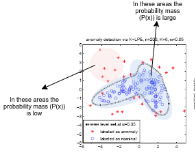
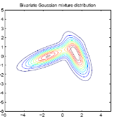
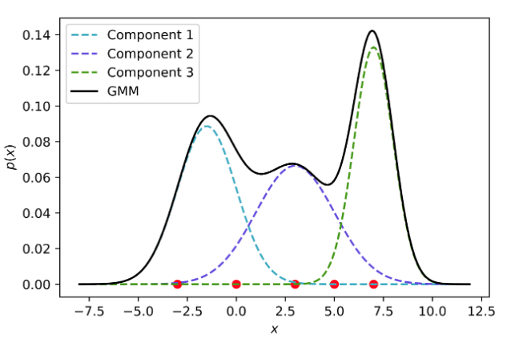

- Introduction
- Gaussian Mixture Models
- EM Algorithm with GMM's
- Recap: Anomaly Detection
- Generalized EM Algorithm
This technique is employed in Density Estimation problems and Anomaly Detection.
Such problems aim to represent data in a compact form using a statistical distribution, e.g., Gaussian, Beta, or Gamma. You can think of those problems as a clustering task but from a probabilistic point of view. This is what makes the EM algorithm a probabilistic generative model.
Thus, if we are given \(n\) samples, we model them with \(P(x)\), such that if \(P(x) < \epsilon\), where \(\epsilon\) is some threshold, then we detect an anomaly.
However, you may expect that a single Gaussian with its mean and variance cannot map thousands of instances in a dataset into a set of \(K\) clusters accurately, so we may assume that there are \(K\) distributions that describe the data, hence we use Mixture Models.
For example, imagine you have the following dataset:

It looks like the data comes from two different Gaussian distributions:

So to model this data we use a Mixture of Gaussian Models.
Note that if we knew by which distribution each sample was generated, we would simply use MLE, however we do not know this information, therefore we use the Expectation Maximization Algorithm and we introduce the latent variable \(z\) in place of the predicted output \(y\) we had in supervised learning algorithms.
To model the data, first of all, we suppose that there is a latent (hidden/unobserved) random variable \(z\), and \(x^{(i)}, z^{(i)}\) are distributed (by a joint distribution) like so
\begin{align} P(x^{(i)},z^{(i)}) = P(x^{(i)}|z^{(i)}) P(z^{(i)}) \end{align}Where \(z^{(i)} \sim Multinomial(\phi)\), that is \(z^{(i)}\) is distributed according to a multinomial distribution. This distribution models for each \(z^{(i)}\) the probability of it being equal to \(1, 2, ..., K\), where \(K\) is the number of clusters. This will denote the probability of a point \(x^{(i)}\) being drawn from each of the distributions.
And \(P(x^{(i)}|z^{(i)}=j)\) is the probability of \(x^{(i)}\) being generated by the cluster \(j\). Where \(x^{(i)}|z^{(i)} = j\) is drawn from a normal distribution \(\mathcal{N}(\mu_j, \Sigma_j)\).
To build a density estimator model, we cannot rely on a simple distribution. Mixture models try to tackle this limitation by combining a set of distributions to create a convex space where we can search for the optimal parameters for such distributions using Maximum Likelihood Estimation (MLE).
A Mixture Model is expressed by the following equations:
\begin{align} p(x^{(i)}) = \sum_{j=1}^K \phi^{(i)}_j p_j(x^{(i)}) \tag{1} \end{align} \begin{align} 0 \leq \phi^{(i)}_j \leq 1, \sum_{j=1}^K \phi^{(i)}_j = 1 \end{align}Where \(K\) is the number of mixture components (clusters), \(\phi^{(i)}_j\)'s are the mixture weights, and \(p_j(x^{(i)})\)'s are members of a family of distributions (Gaussian, Poisson, Bernoulli, etc). So for each example \(x^{(i)}\) and for each distribution \(j\), each weight \(\phi^{(i)}_j\) is between 0 and 1, and the sum over \(k\) of the weights \(\phi_j^{(i)}\) for every example \(x^{(i)}\) equals one.
Consequently, a GMM is a Mixture Model where the \(p_j(x^{(i)})\) is a finite combination of Gaussian Distributions. Therefore, a GMM can be precisely defined by the following set of equations:
\begin{align} p(x^{(i)};\theta) = \sum_{j=1}^K \phi^{(i)}_j \mathcal{N}(x^{(i)};\mu_j,\,\Sigma_j) \end{align} \begin{align} 0 \leq \phi^{(i)}_j \leq 1, \sum_{j=1}^K \phi^{(i)}_j = 1 \end{align}Where \(\theta\) is the collection of all the parameters of the model (mixture weights, means, and covariance matrices):
\begin{align} \theta = \{\phi_1, \cdots, \phi_K, \mu_1, \cdots, \mu_K, \Sigma_1, \cdots, \Sigma_K\} \end{align}For example, the following plot shows what a GMM derived from 3 mixture components looks like:

As a consequence, for each data point, \(x^{(i)}\) (in red), we can compute the probability that it belongs to each component (\(P(x^{(i)}|z^{(i)} = j)\), where \(j = 1, 2, 3\))(make a “soft” assignment). This quantity is called “responsibility”.
The Expectation Maximization Algorithm is comprised of two steps:
- Guess the value of the responsibilities \(w^{(i)}_j\), that represent the "amount" of each \(x^{(i)}\) that was generated from the distribution \(j\) (or the probability that the \(j\)th distribution generated the point \(x^{(i)}\)).
- Compute the values of the parameters of the distributions: \(\theta = \{\phi, \mu, \Sigma\}\) according to the \(MLE\) (Maximum Likelihood Estimation) with respect to the parameters. Thus, we want to maximize \(\mathcal{L}(\Phi, \mu, \Sigma)\).
In this step, as we have said, we will compute the value of the responsibilities with the given parameters \(\phi, \mu, \Sigma\). So for each example \(i\) and each component (distribution) \(j\), the amount of \(x^{(i)}\) that is generated by the component \(j\) is given by:
\begin{align} w^{(i)}_j = P(z^{(i)} = j | x^{(i)}; \phi_j, \mu_j, \Sigma_j) \end{align}By Bayes' Rule, we can rewrite the equation as follows:
\begin{align} w^{(i)}_j = \frac{P(x^{(i)}|z^{(i)} = j)P(z^{(i)} = j)}{\sum_{l=1}^K \left[P(x^{(i)}|z^{(i)} = l)P(z^{(i)} = l)\right]} \end{align}Note that the likelihood \(P(x^{(i)}|z^{(i)} = j)\) and each likelihood \(P(x^{(i)}|z^{(i)} = l)\) come from a Gaussian distribution, therefore:
\begin{align} P(x^{(i)}|z^{(i)} = j) = \frac{1}{(2\pi)^{\frac{n}{2}}|\Sigma_j|^{\frac{1}{2}}} \exp\left(-\frac{1}{2}(x^{(i)} - \mu_j)^T \Sigma_j^{-1} (x^{(i)} - \mu_j)\right) \tag{2} \end{align}To simplify notation we will denote \(P(x^{(i)}|z^{(i)} = j)\) as \(\mathcal{N}(\mu_j, \Sigma_j)\). On the other hand, the prior \(P(z^{(i)} = j)\) comes from a Multinomial distribution, hence:
\begin{align} P(z^{(i)} = j) = \phi_j \tag{3} \end{align}Combining all the expressions:
\begin{align} w^{(i)}_j = \frac{\phi_j\mathcal{N}(\mu_j, \Sigma_j)}{\sum_{l=1}^K \left[\phi_l\mathcal{N}(\mu_l, \Sigma_l)\right]} \tag{4} \end{align}All that is left to do is plug all of the values into each equation \((2)\) and \((3)\) (this values are known, given the equations are written in terms of the distributions' parameters) and compute each \(w^{(i)}_j\) given \((4)\).
In this step what we do is maximize the log likelihood of the distributions' parameters \(\theta\), that is we maximize \(\mathcal{L}(\phi, \mu, \sigma)\). But first, let us see how do we maximize the parameters in GMM.
We are going to show how to maximize the log likelihood of the parameters of a Gaussian Mixture Model. The goal of the GMM is to represent the distribution of the data as accurately as possible using a linear combination of Gaussian Distributions.
Given a dataset \(X\) of \(m\) data points, we assume they are i.i.d (independent and identically distributed), therefore the maximum likelihood estimator over \(X\) can be expressed as the product of the individual likelihoods. To simplify the equations, we are going to directly apply the logarithm to the MLE function:
\begin{align} \log \mathcal{L}(X|\theta) = \log p(X|\theta) = \log \prod_{i=1}^m p(x^{(i)}|\theta) = \sum_{i=1}^m \log p(x^{(i)}|\theta) \end{align}By \((1)\) we know that \(p(x^{(i)}|\theta)\) is a linear combination of Gaussian distributions, therefore:
\begin{align} \log \mathcal{L}(X|\theta) = \sum_{i=1}^n \log \sum_{j=1}^K \phi_j^{(i)}\mathcal{N}(x^{(i)}|\mu_j, \Sigma_j) \end{align}This equation is not tractable, so we won't get an analytical solution by just taking the its derivative with respect to \(\theta\) and setting it to 0. The following set of equations outline how we would evaluate it:
\begin{align} \frac{\delta \mathcal{L}}{\delta \mu_j} \sum_{i=1}^m \frac{\delta \log p(x^{(i)}|\theta)}{\delta \mu_j} = 0^T \end{align} \begin{align} \frac{\delta \mathcal{L}}{\delta \Sigma_j} \sum_{i=1}^m \frac{\delta \log p(x^{(i)}|\theta)}{\delta \Sigma_j} = 0 \end{align} \begin{align} \frac{\delta \mathcal{L}}{\delta \phi_j} \sum_{i=1}^m \frac{\delta \log p(x^{(i)}|\theta)}{\delta \phi_j} = 0 \end{align}Observe that the computation of each parameter from \(\theta (\mu, \Sigma, \phi)\) depends on the other parameters in a complex way. To solve those equations, we can use the strategy of optimizing some parameters while keeping the others fixed.
Going back to the Expectation Maximization Algorithm, there is a way of updating the individual parameters of a GMM given prior (initialized at random) parameters \(\mu, \Sigma, \phi\). This approach works by updating some parameters while keeping the others fixed. So, by solving the derivatives presented above we derive the three following updating rules:
\begin{align} \hat{\mu}_j = \frac{\sum_{i=1}^m w^{(i)}_jx^{(i)}}{\sum_{l=1}^m w^{(l)}_j} \end{align} \begin{align} \hat{\Sigma}_j = \frac{\sum_{i=1}^m w^{(i)}_j (x^{(i)} - \hat{\mu}_j)(x^{(i)} - \hat{\mu}_j)^T}{\sum_{l=1}^m w^{(l)}_j} \end{align} \begin{align} \hat{\phi}_j = \frac{1}{m} \sum_{i=1}^m w^{(i)}_j \end{align}To simplify a bit the notation, if \(N_j = \sum_{l=1}^m w^{(i)}_l\):
\begin{align} \hat{\mu}_j = \frac{1}{N_j} \sum_{i=1}^m w^{(i)}_jx^{(i)} \end{align} \begin{align} \hat{\Sigma}_j = \frac{1}{N_j}\sum_{i=1}^m w^{(i)}_j (x^{(i)} - \hat{\mu}_j)(x^{(i)} - \hat{\mu}_j)^T \end{align} \begin{align} \hat{\phi}_j = \frac{N_j}{m} \end{align}Note that the update of \(\mu, \Sigma, \phi\), all depend on the responsibilities (\(w^{(i)}_j\)), which by its turn, depends on \(\mu, \Sigma, \phi\). That’s why there's not a closed-form solution to equations.
Furthermore these equations do not aim to precisely maximize over \(\theta\) the actual log likelihood. Instead they maximize a proxy function of the log-likelihood over \(\theta\), namely, the expected log-likelihood, which can be derived from the log-likelihood using Jensen's Inequality as follows:
\begin{align} \hat{\mathcal{L}}(X|\theta) = \sum_{i=1}^m\sum_{j=1}^K w^{(i)}_j \log \left( \frac{\phi_j \mathcal{N}(x^{(i)} | \mu_j, \Sigma_j)}{w^{(i)}_j} \right) \tag{5} \end{align}The process consists of an iterative process that alternates between two steps. The first step is to compute the responsibilities (E step) of each mixture component for each data point using the current parameters (\(\mu, \Sigma, \phi\)). The second step consists of updating the parameters (M step) in order to maximize the expected log-likelihood given by \((5)\)
The E and M steps are repeated until there is no significant progress in the proxy function of the log-likelihood computed after the M step.
Thus, when the parameters \(\theta\) are optimized, we can compute \(P(x) = \sum_{j=1}^K P(x|z = j)\) and if \(P(x) < \epsilon\) you can flag \(x\) as an anomaly.